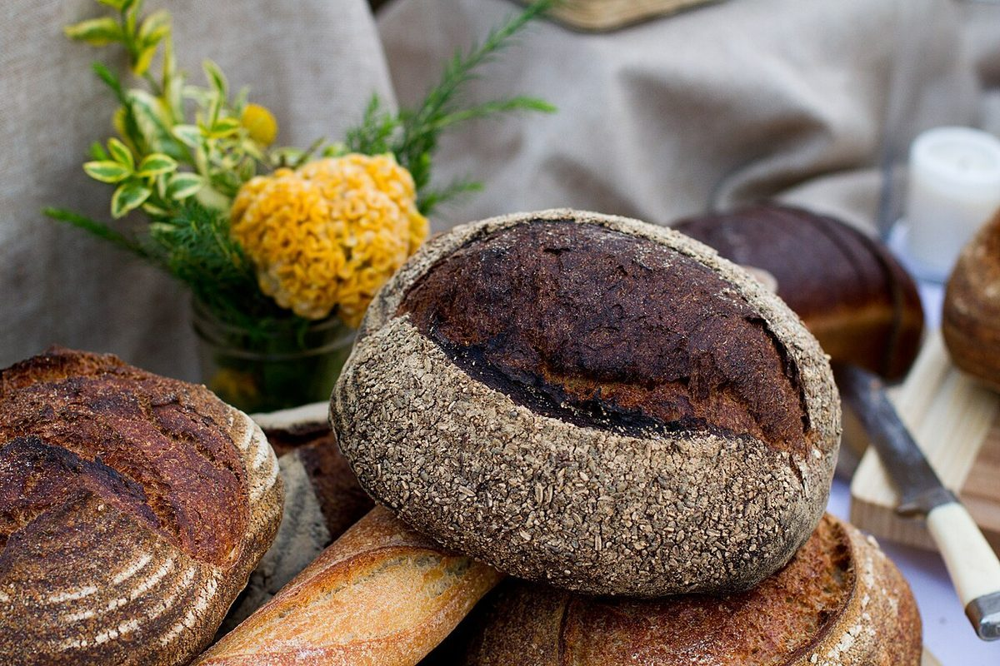

パン屋 / 福井県敦賀市
blissful
福井県敦賀市松島町にあるパン屋「blissful.」のご案内ページです。営業時間やパンの内容は準備中。まずはInstagramをのぞいてみてください。

制作側の連想
屋号の終わりの「.」から
「blissful.」の最後に付いている点(ピリオド)を見て、制作側は「文を書き終えて、ひと呼吸おく印」を連想しました。そこでこのページでは、一日を短い文に区切り、文の終わりに必ず黄色い点を打つ作りにしています。店名の由来や理念とは無関係な、制作側の連想です。
六つの文(想像です)
パンのある一日を、短い文で。
以下は制作側が想像した情景で、お店の実際の工程や商品を示すものではありません。写真は国外・撮影地不明のフリー素材です。
- 01
粉をふるう

撮影地不明 - 02
生地を休ませる

撮影地不明 - 03
窯に入れる

国外(フィンランド) - 04
冷ます

国外(米国) - 05
ひと切れ、のせる

国外(米国) - 06
ゆっくり食べる

国外(ベルギー)